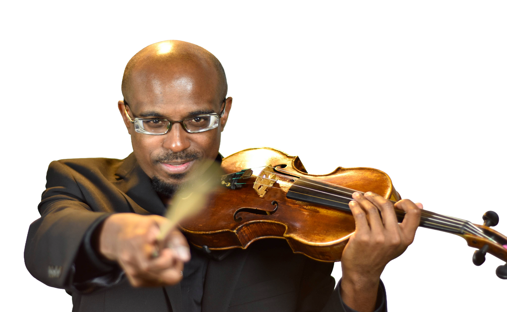

Leonardo Rosario
Biography
Orchestra Director · Violinist · Assistant Professor of Music

Leonardo Rosario
Orchestra Director · Violinist · Assistant Professor of Music
Full Biography
Dr. Leonardo Rosario is an accomplished violinist, conductor, and educator, currently serving as Director of the Symphony Orchestra and Assistant Professor of Strings at Lee University, where he teaches undergraduate and graduate students in violin, viola, and conducting.
Leonardo began his violin studies with Sibila Schelin, later continuing with Cecilia Guida and Ayrton Pinto. He has participated in masterclasses with distinguished artists including Leon Spier and Lorenz Nasturica (Berliner Philharmoniker), Lavard Skou-Larsen (Universität Mozarteum, Austria), Renata Kubala (Symfoniorkester Trondheim, Norway), and Gerardo Ribeiro (Northwestern University, Chicago).
From 2003 to 2005, he was a member of the Youth Orchestra of the Americas (YOA), serving as principal second violin during its inaugural season and touring across nine countries in North, Central, and South America. He also performed with the University of São Paulo (USP) Chamber Orchestra as concertmaster, the São Paulo State University (UNESP) Chamber Orchestra, and the Experimental Repertoire Orchestra. In addition, he attended the Festival Internacional de Campos do Jordão in 1999, 2000, and 2005, performing under the batons of Kurt Masur, Lorin Maazel, Gustavo Dudamel, among others.
"It is important to me as an artitst to expose the audience and my students to a variety of composers, styles, ethnics, and genre. It broadens their world."
In 2008, Leonardo earned his Master’s degree with full scholarship at the Boston Conservatory, studying with Irina Muresanu. During this time, he appeared as soloist with the Conservatory Orchestra on two occasions, performing Brahms’s Violin Concerto and Beethoven’s Triple Concerto. He was also selected as a member of the Conservatory’s Honors Quartet, which won second prize at the International Chamber Music Competition of the Chamber Music Foundation of New England. Concurrently, he pursued additional studies with Mela Tenenbaum in New York.
Upon returning to Brazil, Leonardo joined the Minas Gerais Philharmonic Orchestra (2008–2015), founded and managed the Camerata Pampulha Chamber Group, and performed with the Othello Quartet. He later returned to the United States to complete his Doctor of Musical Arts at the University of North Carolina–Greensboro under Fabian Lopez, while serving as Assistant Concertmaster of the Fayetteville Symphony Orchestra. From 2018 to 2020, he was Orchestra Director at Bradford Preparatory School, teaching grades 4–12.
In 2020, Leonardo was appointed Assistant Professor of Music, Director of the Strings Area, and Director of Orchestras at Kansas Wesleyan University (KWU). Over five years, he expanded the orchestra program and strings department, served as a guest clinician for numerous honor orchestras, and frequently conducted and led violin sectionals for the Kansas Music Educators Association (KMEA) Orchestras. He also performed with the Salina Symphony Orchestra and conducted the Salina Youth Symphony Orchestra.
Selected Milestones